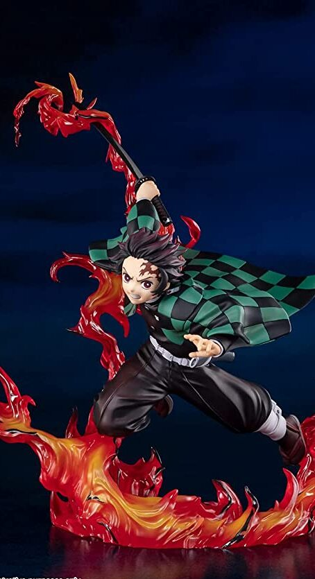

Exclusive Demon Slayer Figurines

Tamashi Nations - Demon Slayer - Tanjiro Kamado Total Concentration Breathing, Bandai Spirits FiguartsZERO
FEATURES
- Theme: Anime
- Anime: Demon Slayer
- Brand: TAMASHII NATIONS
- Item Dimensions (L x W x H): 6.25 x 7.75 x 7.5 inches
- Material: Acrylonitrile Butadiene Styrene
- Collection Name: Tamashii Nations FiguartsZERO - Tanjiro Kamado [Demon Slayer], Bandai Spirits
- Watch Product Review
ABOUT THIS ITEM
- Tanjiro Kamado from "Demon Slayer" joins Figuarts ZERO!
- They're high-impact distillations of the Demon Slayer world, finished with gorgeous effects.
- The set includes the figure and a stand.
- Includes wrap-around flame effects for replicating his Hinokami Kagura (Dance of the Fire God)!
- Can be combined with the Figuarts ZERO Nezuko Kamado Blood Demon Art figure
- Approx. 7.6in tall, Highly Detailed, Anime Accurate
- Only product with affixed official Bluefin label has been thoroughly tested for safety and meets all North American consumer product safety regulations and entitles the purchaser to product support assistance
PRICE : RM 159.99